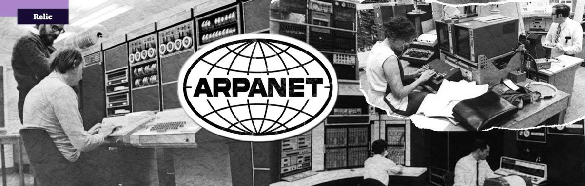

La historia de las redes informáticas comenzó en los años 50 con sistemas centralizados, evolucionando drásticamente en 1969 con ARPANET, la primera red de conmutación de paquetes. Financiada por el Departamento de Defensa de EE. UU., esta red sentó las bases de la comunicación digital, dando lugar al protocolo TCP/IP en 1983, lo que finalmente consolidó Internet tal como lo conocemos hoy.

Una red de computadoras es un conjunto de dispositivos (computadoras, servidores, teléfonos, periféricos) interconectados entre sí, ya sea por cables o de forma inalámbrica, que comparten recursos, intercambian datos y permiten la comunicación. Su objetivo principal es optimizar el flujo de información y facilitar el trabajo colaborativo.